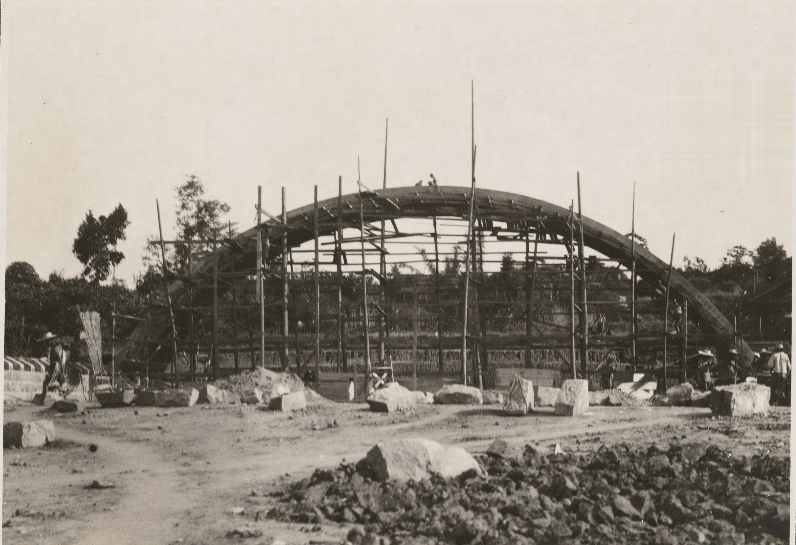

📜 历史现场：驼峰航线
1942年滇缅公路被日军切断后，中美两国开辟了从印度阿萨姆邦 飞越喜马拉雅山脉直达中国昆明、重庆的空中补给线—— 因航线飞越海拔4000-6000米的高山，被称为"驼峰航线"。
65万吨
战略物资
600+
损失飞机
近2000
牺牲飞行员
航线下方的山谷里，堆满了飞机残骸，在阳光下闪着铝光—— 飞行员们把那条山谷叫做"铝谷"。
📷 历史影像


📁 现场拾得
在机场旁的临时营房里，你发现一块飞行员的身份牌，铜牌上刻着：
"飞行大队 · 机械师 · 周某某"，背面还刻了两个字："等我"。
🔓 新地点解锁
小沈说，今天有一批后方送来的棉衣和茶叶，要卸在磁器口古镇—— 轰炸最凶的那几年，那里是全城人的退路。"去看看吧，那里有重庆的另一种样子。"